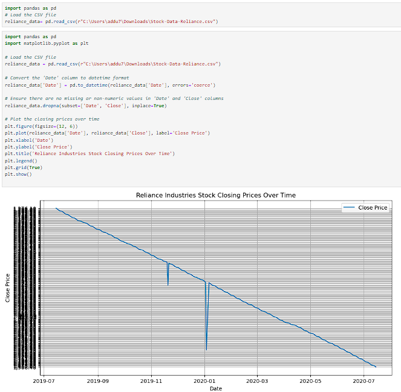
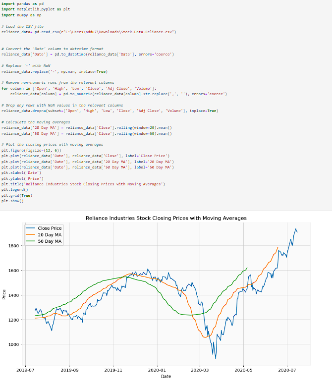
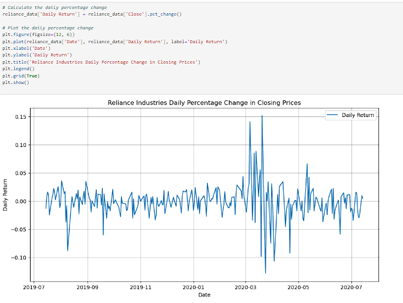
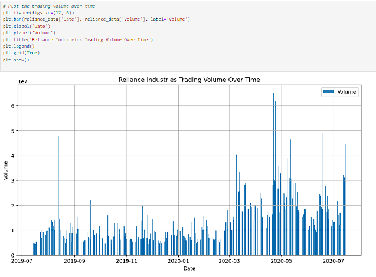
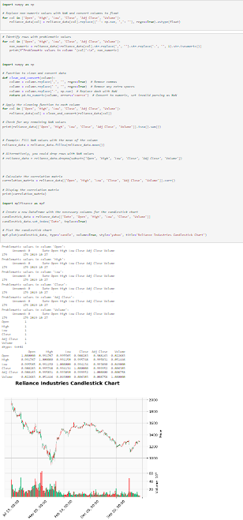

The Reliance Industries Stock Data Analysis
This project involves a comprehensive analysis of Reliance Industries' stock data, focusing on data cleaning, preprocessing, and visualization techniques to uncover trends and patterns in stock prices. It utilizes moving averages and daily percentage changes to provide insights into market behavior and volatility. For the complete code and detailed analysis, visit my Reliance Industries Stock Data Analysis Repository.
For the complete code and detailed analysis, ✨ Click here to explore my Reliance Industries Stock Data Analysis Repository! ✨
1. Closing Prices Over Time
This graph visualizes the closing prices of Reliance Industries' stock over time. By plotting the closing prices, we can identify general trends and fluctuations in the stock's value, allowing for a better understanding of its performance over a specified period. Notable peaks and troughs in the graph indicate periods of growth and decline, which can guide investment decisions.
2. Closing Prices with Moving Averages
In this graph, the closing prices of Reliance Industries' stock are plotted alongside the 20-day and 50-day moving averages. The moving averages smooth out short-term fluctuations and highlight longer-term trends. This visualization helps investors recognize bullish and bearish trends, providing insights into potential buy or sell signals based on price movement relative to these averages.
3. Daily Percentage Change in Closing Prices
This graph displays the daily percentage change in the closing prices of Reliance Industries' stock. It illustrates the stock's daily volatility, indicating how much the price fluctuates from one day to the next. By analyzing this data, investors can assess the risk associated with the stock and make informed decisions regarding their trading strategies.
4. Trading Volume Over Time
The bar chart visualizes the trading volume of Reliance Industries' stock over time. This graph provides insights into market activity and liquidity, indicating how many shares were traded on specific days. High trading volumes can suggest increased interest in the stock, which may precede significant price movements, while low volumes might indicate a lack of investor interest.
5. Candlestick Chart of Reliance Industries
The candlestick chart presents a detailed view of price movements for Reliance Industries' stock, showing the open, high, low, and close prices for each time period. Each candlestick provides valuable information regarding market sentiment; for example, a long green candlestick indicates strong buying pressure, while a long red candlestick suggests selling pressure. This chart is essential for traders looking to make short-term investment decisions based on price action.
